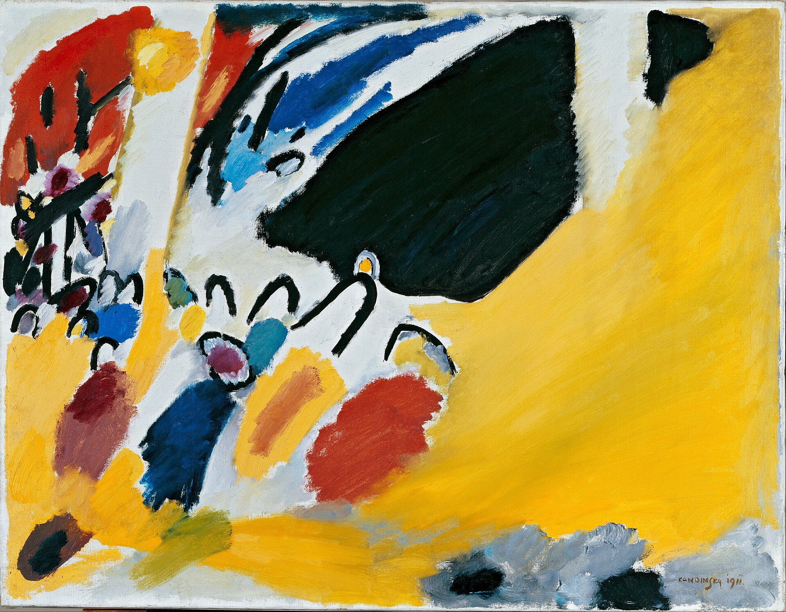

Жёлтый звучал для него как труба. Синий — как виолончель. Зелёный — как скрипка, красный — как туба или литавры, оранжевый — как альт, фиолетовый — как фагот.
Василий Кандинский не придумывал эти соответствия как поэтические образы. Он их слышал.
Что такое синестезия
Синестезия — это когда одно ощущение автоматически вызывает другое. Человек слышит звук и видит цвет. Читает букву и воспринимает её окрашенной. Это не воображение и не метафора: у синестетов при таком восприятии активируются реальные зоны мозга, отвечающие за «чужую» модальность.
Встречается примерно у 4% людей. Среди известных синестетов — художник Дэвид Хокни, музыканты Билли Айлиш, Фаррелл Уильямс, Лорд.
Кандинский был одним из них. Цвет и звук у него были связаны напрямую, и он всю жизнь пытался найти этому язык.
Первое его детское воспоминание — о цветах: светлая сочная зелень, белый, карминно-красный, чёрный, жёлтая охра. С пяти лет он учился играть на фортепиано и виолончели. Синий — цвет, который он связывал со звучанием виолончели, — остался его любимым.
Вечер, изменивший его жизнь
Свою синестетическую способность он впервые описал в тридцать лет, на представлении «Лоэнгрина» Вагнера в Большом театре.
Слушая музыку, он увидел цвета. Не вообразил — увидел. И понял то, что стало основой всей его дальнейшей работы: живопись способна обладать той же силой прямого воздействия, что и музыка.
В то время он был успешным юристом, ему предлагали профессорскую должность. Через несколько лет он всё оставил и уехал в Мюнхен учиться живописи.

Система цвета и звука
В книге «О духовном в искусстве» (1911) он изложил свою систему.
Жёлтый — труба или фанфары. Резкий, рвущийся наружу, к зрителю, способный вызывать тревогу и агрессию, особенно когда усиливается. Его собственная формулировка: жёлтый действует как пронзительный звук трубы, играющей всё громче.
Синий — виолончель, а самый глубокий синий приближается к звучанию органа. Уходит вглубь, зовёт за собой, успокаивает.
Красный — туба или литавры. Оранжевый — альт или тёплый низкий голос. Зелёный — скрипка, спокойные растянутые ноты. Фиолетовый — фагот. Чёрный — пауза, тишина между звуками.
Он писал об этом не как о личной особенности, а как об устройстве мира — потому что для него это и было устройством мира. То, что он называл «внутренним звучанием цвета», по его убеждению, действовало на душу напрямую, минуя рассудок.
Из этих идей выросли не только картины. Между 1909 и 1914 годами он задумал четыре «цвето-звуковых драмы» для театра, самая известная — «Жёлтый звук», опубликованная в альманахе «Синий всадник» в 1912 году. При жизни он так и не увидел её на сцене.
Картина, которую он не узнал
Второй поворотный эпизод произошёл случайно.
Кандинский вернулся в мастерскую в сумерках. У стены стояла картина, прислонённая боком. Он взглянул — и не понял, что видит. Ни предмета, ни сюжета, только цветовые пятна и формы, светящиеся в полумраке.
Она показалась ему невероятно красивой. Красивее всего, что он писал до этого.
Через мгновение он понял, что это его собственная работа.
Этот случай он описал в автобиографических «Ступенях» (1913) как решающий. Он увидел: когда предмет исчезает, остаётся то, что действует напрямую. И действует сильнее — потому что не проходит через узнавание.
С этого началось движение к абстракции. Не как отказ от изображения ради оригинальности, а как попытка добраться до чистого воздействия, минуя посредника.
Оговорка, которая важна
Кандинский считал свои соответствия универсальными. Позднейшие исследования это не подтвердили: когда его систему цвето-формовых связей проверяли экспериментально, результаты оказывались противоречивыми. Люди связывают цвета и формы, но чаще по бытовым ассоциациям — красный с треугольником из-за дорожных знаков, жёлтый с кругом из-за солнца.
То есть его конкретные пары «жёлтый — труба», «синий — виолончель» — это его личный опыт, а не закон восприятия.
Но сама идея осталась работающей: цвет действительно несёт эмоциональную информацию, и она передаётся не через сюжет.
Почему это важно не только для истории искусства
У большинства наших состояний нет точных слов. Мы говорим «тревожно», «тяжело», «как-то не так» — и понимаем, что это приблизительно. Внутренний опыт устроен богаче, чем словарь, которым мы его описываем.
Но у него есть другие измерения. Цвет. Плотность. Движение. Температура. Направление — вверх, вниз, наружу, внутрь.
Когда человек не может сказать, что с ним, он часто может это показать: выбрать цвет, положить его на бумагу определённым нажимом, задать направление. И то, что появляется, оказывается точнее слов — не потому что красивее, а потому что не проходило через фильтр формулировки.
Это не мистика и не проекция смыслов на случайные пятна. Это просто другой канал, у которого своя пропускная способность.
Попробуйте сами
Google Arts & Culture вместе с Центром Помпиду сделали интерактивный проект «Play a Kandinsky»: картину «Жёлто-красно-синее» (1925) можно «сыграть» как инструмент — кликая по цветным участкам и слыша то, что связывал с ними Кандинский. Звуки создали саунд-артисты Antoine Bertin и NSDOS вместе с нейросетью Google Magenta, обученной на музыке эпохи Кандинского.
В проекте четыре части: теория цвета и звука, звучание картины целиком, эмоции по участкам — и возможность ввести два своих чувства и получить собранную из них композицию с расшифровкой, какими цветами и формами они звучат.
Три минуты — и вы делаете ровно то, о чём эта статья: переводите состояние в цвет и звук. Сыграть картину →
Что с этим делать дальше
Мы часто встречаем на встречах одну и ту же сцену. Человек долго не может объяснить, что его беспокоит — начинает, останавливается, говорит «ну, как-то так». А потом берёт материалы, работает пятнадцать минут, смотрит на лист и говорит: вот. Вот это оно.
И дальше уже находятся слова — но не наощупь, а от готового.
Кандинский шёл к этому от избытка: он слышал цвета и хотел, чтобы услышали другие. Мы идём с другой стороны — от нехватки слов. Но встречаемся в одной точке.
Цвет говорит о состоянии то, чего не говорит язык.
Про наш собственный опыт с цветом — в статье «Цвет — язык души». А попробовать перевести состояние в цвет вместе с нами — на арт-коучинге: бесплатная химическая сессия, открытые сессии и корпоративные форматы.
Источники
- «Play a Kandinsky» — проект Google Arts & Culture и Центра Помпиду: artsandculture.google.com; страница в Центре Помпиду.
- Соответствия цвета и инструмента — В. Кандинский, «О духовном в искусстве» (1911).
- Опровержение универсальности цвето-формовых связей — Makin & Wuerger, Frontiers in Psychology, 2013 (PMC3769683).
- «Жёлтый звук» и цвето-звуковые драмы — альманах «Синий всадник», 1912 (Wikipedia).
- Первоисточники на русском — «О духовном в искусстве» и «Ступени» (1913), доступны в открытом доступе.
#историяхудожника #Кандинский #синестезия #цветизвук #абстракция #современноеискусство #цветиэмоции #арткоучинг #МыДолжныБытьВоображаемы